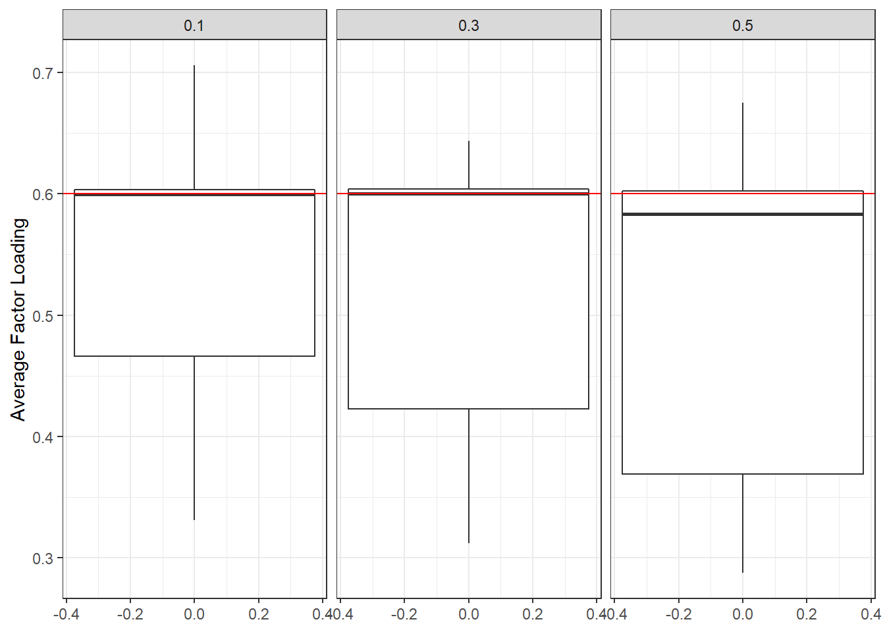
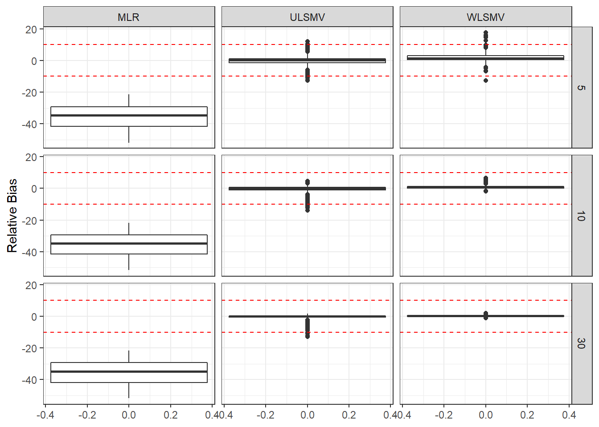
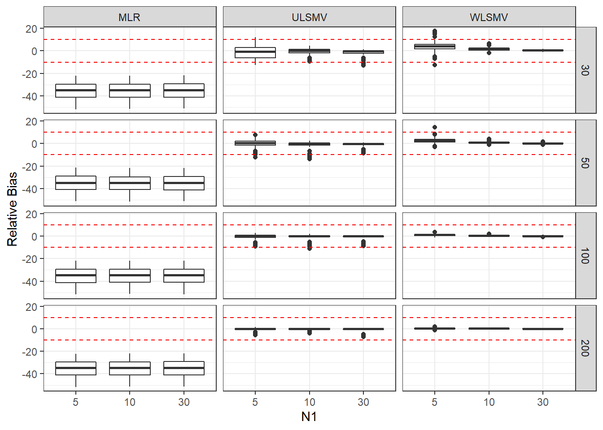

ML-CFA: Parameter Relative Bias
Last updated: 2020-03-30
Checks: 6 1
Knit directory: mcfa-para-est/
This reproducible R Markdown analysis was created with workflowr (version 1.5.0). The Checks tab describes the reproducibility checks that were applied when the results were created. The Past versions tab lists the development history.
The R Markdown is untracked by Git. To know which version of the R Markdown file created these results, you’ll want to first commit it to the Git repo. If you’re still working on the analysis, you can ignore this warning. When you’re finished, you can run wflow_publish to commit the R Markdown file and build the HTML.
Great job! The global environment was empty. Objects defined in the global environment can affect the analysis in your R Markdown file in unknown ways. For reproduciblity it’s best to always run the code in an empty environment.
The command set.seed(20190614) was run prior to running the code in the R Markdown file. Setting a seed ensures that any results that rely on randomness, e.g. subsampling or permutations, are reproducible.
Great job! Recording the operating system, R version, and package versions is critical for reproducibility.
Nice! There were no cached chunks for this analysis, so you can be confident that you successfully produced the results during this run.
Great job! Using relative paths to the files within your workflowr project makes it easier to run your code on other machines.
Great! You are using Git for version control. Tracking code development and connecting the code version to the results is critical for reproducibility. The version displayed above was the version of the Git repository at the time these results were generated.
Note that you need to be careful to ensure that all relevant files for the analysis have been committed to Git prior to generating the results (you can use wflow_publish or wflow_git_commit). workflowr only checks the R Markdown file, but you know if there are other scripts or data files that it depends on. Below is the status of the Git repository when the results were generated:
Ignored files:
Ignored: .Rhistory
Ignored: .Rproj.user/
Ignored: manuscript/
Ignored: sera-presentation/
Untracked files:
Untracked: analysis/data-cleaning.Rmd
Untracked: analysis/ml-cfa-convergence-summary.Rmd
Untracked: analysis/ml-cfa-parameter-bias-RB.Rmd
Untracked: analysis/ml-cfa-parameter-convergence.Rmd
Untracked: code/combine_files_extract_para.R
Untracked: code/get_data.R
Untracked: code/get_data.Rmd
Untracked: code/load_packages.R
Untracked: data/compiled_para_results.txt
Untracked: data/results_bias_est.csv
Untracked: output/fact-cov-converge-largeN.pdf
Untracked: output/fact-cov-converge-medN.pdf
Untracked: output/fact-cov-converge-smallN.pdf
Untracked: output/loading-converge-largeN.pdf
Untracked: output/loading-converge-medN.pdf
Untracked: output/loading-converge-smallN.pdf
Unstaged changes:
Modified: .gitignore
Modified: README.md
Modified: analysis/_site.yml
Modified: analysis/about.Rmd
Modified: analysis/index.Rmd
Modified: mcfa-para-est.Rproj
Note that any generated files, e.g. HTML, png, CSS, etc., are not included in this status report because it is ok for generated content to have uncommitted changes.
There are no past versions. Publish this analysis with wflow_publish() to start tracking its development.
rm(list=ls())
source(paste0(getwd(),"/code/load_packages.R"))
source(paste0(getwd(),"/code/get_data.R"))sessionInfo()R version 3.6.1 (2019-07-05)
Platform: x86_64-w64-mingw32/x64 (64-bit)
Running under: Windows 10 x64 (build 18362)
Matrix products: default
locale:
[1] LC_COLLATE=English_United States.1252
[2] LC_CTYPE=English_United States.1252
[3] LC_MONETARY=English_United States.1252
[4] LC_NUMERIC=C
[5] LC_TIME=English_United States.1252
attached base packages:
[1] stats graphics grDevices utils datasets methods base
other attached packages:
[1] xtable_1.8-4 kableExtra_1.1.0 MplusAutomation_0.7-3
[4] data.table_1.12.6 patchwork_1.0.0 forcats_0.4.0
[7] stringr_1.4.0 dplyr_0.8.3 purrr_0.3.3
[10] readr_1.3.1 tidyr_1.0.0 tibble_2.1.3
[13] ggplot2_3.2.1 tidyverse_1.3.0
loaded via a namespace (and not attached):
[1] Rcpp_1.0.3 lubridate_1.7.4 lattice_0.20-38 assertthat_0.2.1
[5] zeallot_0.1.0 rprojroot_1.3-2 digest_0.6.23 R6_2.4.1
[9] cellranger_1.1.0 plyr_1.8.4 backports_1.1.5 reprex_0.3.0
[13] evaluate_0.14 coda_0.19-3 httr_1.4.1 pillar_1.4.2
[17] rlang_0.4.2 lazyeval_0.2.2 readxl_1.3.1 rstudioapi_0.10
[21] texreg_1.36.23 rmarkdown_1.18 gsubfn_0.7 proto_1.0.0
[25] webshot_0.5.2 pander_0.6.3 munsell_0.5.0 broom_0.5.2
[29] compiler_3.6.1 httpuv_1.5.2 modelr_0.1.5 xfun_0.11
[33] pkgconfig_2.0.3 htmltools_0.4.0 tidyselect_0.2.5 workflowr_1.5.0
[37] viridisLite_0.3.0 crayon_1.3.4 dbplyr_1.4.2 withr_2.1.2
[41] later_1.0.0 grid_3.6.1 nlme_3.1-140 jsonlite_1.6
[45] gtable_0.3.0 lifecycle_0.1.0 DBI_1.0.0 git2r_0.26.1
[49] magrittr_1.5 scales_1.1.0 cli_1.1.0 stringi_1.4.3
[53] fs_1.3.1 promises_1.1.0 xml2_1.2.2 generics_0.0.2
[57] vctrs_0.2.0 boot_1.3-22 tools_3.6.1 glue_1.3.1
[61] hms_0.5.2 parallel_3.6.1 yaml_2.2.0 colorspace_1.4-1
[65] rvest_0.3.5 knitr_1.26 haven_2.2.0 # general options
theme_set(theme_bw())
options(digits=3)Bias
Bias estimated were computed for
- Factor loadings (\(\lambda_{1-10}\)),
- Level-1 factor covariance (\(\psi_{W12}\)),
- Level-2 factor (co)variances (\(\psi_{B1}, \psi_{B2}, \psi_{B12}\)),
- Level-2 item residual variances (\(\theta_{B1-10}\)), and
- ICCs for latent and observed variable
with special attention on the ICCs because these tend to be important metrics in ML-CFA as an indication of the need for ML-CFA/multilevel modeling in general. If we are unable to precisely recapture the level of effect that the multilevel structure has on the observed responses, then the model is ill-performing. We assessed the performance using three metrics of bias.
- Relative Bias - average deviation of the estimates (\(\hat{\theta}\)) from the known population value (\(\theta\)) across replications. \[ Bias(\hat{\theta}) = \sum_{j=1}^{n_r}\left(\frac{\hat{\theta}_j- \theta}{\theta}\right)/n_r\times 100 \] where, \(n_r\) is the number of usable replications in the cell of the design. However, another representation of bias was also of interest, namely, the root mean square error (RMSE). We partitioned RMSE the that is the average bias (AB) and the sampling variability (SV) (Harwell, 2018). \[ RMSE(\hat\theta) = \sum_{j=1}^{n_r}\frac{(\hat\theta_j -\theta)^2}{n_r}= {\left(\bar{\hat\theta} - \theta\right)}^2 + \sum_{j=1}^{n_r}\frac{(\hat\theta_j -\bar{\hat\theta})^2}{n_r} \] where, \(\bar{\hat\theta}\) is the average estimate of the parameter of interest, \({\left(\bar{\hat\theta} - \theta\right)}^2\) is the squared bias of the estimate, and \(\sum_{j=1}^{n_r}\frac{(\hat\theta_j -\bar{\hat\theta})^2}{n_r}\) represents the SV (sampling variability) of the estimates. Partitioning the bias into these two pieces allows us to assess RMSE based on the two parts of potential sources of error (i.e., bias versus sampling variability). If all the variability in RMSE is due to bias, then all estimates of \(\hat\theta\) are equal, but if all variabilityin RMSE is due to sampling variability, then RMSE is equal to the sampling variability. Therefore, the three values are reported here (but only the two parititioned components in the manuscript to save space).
Estimation Method Efficiency
Another aspect of the parameter estimates that was of interest was the variability in estimation between estimation methods. Meaning, which estimation method was least variable relative to the other methods. We compute an efficiency ratio (or relative efficiency) between estimation methods (m = MLR, u = ULSMV, and w = WLSMV). \[ RE = \sqrt{\left(\frac{\sum_{\forall j}(\hat{\theta}_{mj}-\theta)^2}{\sum_{\forall j}(\hat{\theta}_{uj}-\theta)^2}\right)} \] where RE = relative efficiency, and the ratio was computed for all three pairwise comparisons of (m, u, w).
Computing bias and efficiency estimates
Here, we estimated the bias estimates.
First, we set up some functions to compute the values of interest.
#compute RB
# p = parameter estimate of interest
# pt = true value of parameter of interest
est_relative_bias <- function(data, p, pt){
nr <- nrow(data)
data[, pt] <- as.numeric(data[,pt])
rb <- sum((data[, p] - data[, pt])/data[,pt], na.rm = T)/nr*100
names(rb) <- 'RB'
return(rb)
}
# compute RMSE components
est_rmse <- function(data, p, pt){
nr <- nrow(data)
data[, pt] <- as.numeric(data[,pt])
est_a <- mean(data[,p], na.rm = T)
bias <- (est_a - data[,pt][1])**2
sv <- sum((data[, p] - est_a)**2, na.rm=T)/nr
rmse <- bias + sv
out <- c(rmse, bias, sv)
names(out) <- c('RMSE', 'Bias', 'SampVar')
return(out)
}
# compute estimated relative efficiency of
# parameter est between two estimation methods
est_relative_efficiency <- function(data, p, pt, est1, est2){
dat1 <- filter(data, Estimator == est1)
dat2 <- filter(data, Estimator == est2)
dat1[,pt] <- as.numeric(dat1[,pt])
dat2[,pt] <- as.numeric(dat2[,pt])
re <- sqrt(sum( (dat1[, p] - dat1[,pt])**2, na.rm=T)/sum( (dat2[, p] - dat2[pt])**2, na.rm=T))
names(re) <- 'RE'
return(re)
}Running Computations
Next, loop through the desired results to get the estimates of bias of interest. For more details on the naming of variables for the true values, see the Data Cleaning page.
# take out unconverged/inadmissible cases
sim_results <- filter(sim_results, Converge==1, Admissible==1)
# set up vectors of variable names
pvec <- c(paste0('lambda1',1:6), paste0('lambda2',6:10), 'psiW12','psiB1', 'psiB2', 'psiB12', paste0('thetaB',1:10), 'icc_lv1_est', 'icc_lv2_est', paste0('icc_ov',1:10,'_est'))
# stored "true" values of parameters by each condition
ptvec <- c(rep('lambdaT',11), 'psiW12T', 'psiB1T', 'psiB2T', 'psiB12T', rep("thetaBT", 10), rep('icc_lv',2), rep('icc_ov',10))
# iterators - conditions
N1 <- unique(sim_results$ss_l1)
N2 <- unique(sim_results$ss_l2)
ICC_LV <- unique(sim_results$icc_lv)
ICC_OV <- unique(sim_results$icc_ov)
EST <- levels(sim_results$Estimator)
# results matrix
result <- data.frame(matrix(nrow=length(N1)*length(N2)*length(ICC_LV)*length(ICC_OV)*length(pvec)*length(EST), ncol=(16)))
colnames(result) <- c('N1', 'N2', 'ICC_LV' ,'ICC_OV', 'Variable', 'Estimator', 'RB', 'RMSE', 'Bias', 'SampVar', 'muRE', 'mwRE', 'uwRE', 'nRep', 'estMean', 'estSD')
j <- 1 # row id
for(n1 in N1){
for(n2 in N2){
for(iccl in ICC_LV){
for(icco in ICC_OV){
for(i in 1:length(pvec)){
dat <- filter(sim_results, ss_l1 == n1, ss_l2==n2,
icc_lv==iccl, icc_ov==icco)
result[j:(j+2), 1:5] <- matrix(rep(c(n1,n2, iccl,icco, pvec[i]),3),
ncol=5, byrow = T)
# compute bias by each estimation method
k <- 0
for(est in EST){
sdat <- filter(dat, Estimator==est)
result[j+k, 6] <- est
result[j+k, 7] <- est_relative_bias(sdat, pvec[i], ptvec[i])
result[j+k, 8:10] <- est_rmse(sdat, pvec[i], ptvec[i])
result[j+k, 14] <- nrow(sdat) # number of converged replications
result[j+k, 15] <- mean(sdat[, pvec[i]])
result[j+k, 16] <- sd(sdat[, pvec[i]])
k<-k+1
}
# Compute Relative Efficiency
# MLR vs. ULSMV
result[j:(j+2), 11] <- est_relative_efficiency(dat, pvec[i], ptvec[i],
'MLR','ULSMV')
# MLR vs. WLSMV
result[j:(j+2), 12] <- est_relative_efficiency(dat, pvec[i], ptvec[i],
'MLR','WLSMV')
# ULSMV vs. WLSMV
result[j:(j+2), 13] <- est_relative_efficiency(dat, pvec[i], ptvec[i],
'ULSMV','WLSMV')
# update row
j <- j+3
}
}
}
}
}
# Save Results
write_csv(result, path=paste0(w.d, "/data/results_bias_est.csv"))
# remove sim_results since not-needed anymore
remove(sim_results, dat, sdat, icc_est)So, there are a lot of results that could be reported from this matrix of results. We have saved these results and these estimates are included in the accompanying Shiny app for more detailed exploration by those interested. Here, we describe a subset of the results that we feelt are most important.
Summarizing Results
First, we will plot estimates (botxplots) to show how these estimates changed across conditions. To summarize the results we will average over the parameters that only differ y indices. Meaning we will describe the “average factor loading bias” by reporting the average bias for factor loadings. Additionally, different conditions resultedin different “sample sizes.” By this we mean the number of uses replications. The different number of cases per condition was accounted for by creating a “weight” variable for each row of the result object. This meant that conditions that had more usable replications counted more towards to averages reported (or count as much as if we averaged over the individual replications).
result$wi <- result$nRep/500
# 500 is the max number of replications per cellFactor loadings
sdat <- filter(result, Variable %like% 'lambda')
# first, plot estimates
p1 <- ggplot(sdat, aes(y=estMean))+
geom_boxplot()+
geom_hline(yintercept = 0.6, color="red")+
labs(y="Average Factor Loading")
p2 <- ggplot(sdat, aes(y=estSD))+
geom_boxplot()+
labs(y="SD of Factor Loadings")
p3 <- ggplot(sdat, aes(y=RB))+
geom_boxplot()+
geom_hline(yintercept=-10, color="red", linetype="dashed")+
geom_hline(yintercept=10, color="red", linetype="dashed")+
labs(y="Relative Bias")
p4 <- ggplot(sdat, aes(y=RMSE))+
geom_boxplot()+
labs(y="Root Mean Square Error")
p5 <- ggplot(sdat, aes(y=Bias))+
geom_boxplot()+
labs(y="Sqaured Bias")
p6 <- ggplot(sdat, aes(y=SampVar))+
geom_boxplot()+
labs(y="Sampling Variance of Estimates")
p <- (p1 + p2 + p3)/(p4 + p5 + p6)
pSingle Condition Breakdown
Estimation Method
ggplot(sdat, aes(y=estMean))+
geom_boxplot()+
geom_hline(yintercept = 0.6, color="red")+
labs(y="Average Factor Loading")+
facet_wrap(.~Estimator)ggplot(sdat, aes(y=estSD))+
geom_boxplot()+
labs(y="SD of Factor Loadings")+
facet_wrap(.~Estimator)ggplot(sdat, aes(y=RB))+
geom_boxplot()+
geom_hline(yintercept=-10, color="red", linetype="dashed")+
geom_hline(yintercept=10, color="red", linetype="dashed")+
labs(y="Relative Bias")+
facet_wrap(.~Estimator)ggplot(sdat, aes(y=RMSE))+
geom_boxplot()+
labs(y="Root Mean Square Error")+
facet_wrap(.~Estimator)ggplot(sdat, aes(y=Bias))+
geom_boxplot()+
labs(y="Sqaured Bias")+
facet_wrap(.~Estimator)
ggplot(sdat, aes(y=SampVar))+
geom_boxplot()+
labs(y="Sampling Variance of Estimates")+
facet_wrap(.~Estimator)c <- sdat %>%
group_by(Estimator) %>%
summarise(est = weighted.mean(estMean, wi),
RB = weighted.mean(RB, wi),
RMSE = weighted.mean(RMSE, wi),
Bias = weighted.mean(Bias, wi),
SampVar =weighted.mean(SampVar, wi))
kable(c, format='html', digits=3) %>%
kable_styling(full_width = T)| Estimator | est | RB | RMSE | Bias | SampVar |
|---|---|---|---|---|---|
| MLR | 0.391 | -34.881 | 0.048 | 0.046 | 0.002 |
| ULSMV | 0.592 | -1.317 | 0.026 | 0.000 | 0.025 |
| WLSMV | 0.605 | 0.809 | 0.007 | 0.000 | 0.007 |
Level-2 Sample Size
ggplot(sdat, aes(y=estMean))+
geom_boxplot()+
geom_hline(yintercept = 0.6, color="red")+
labs(y="Average Factor Loading")+
facet_wrap(.~N2)ggplot(sdat, aes(y=estSD))+
geom_boxplot()+
labs(y="SD of Factor Loadings")+
facet_wrap(.~N2)ggplot(sdat, aes(y=RB))+
geom_boxplot()+
geom_hline(yintercept=-10, color="red", linetype="dashed")+
geom_hline(yintercept=10, color="red", linetype="dashed")+
labs(y="Relative Bias")+
facet_wrap(.~N2)ggplot(sdat, aes(y=RMSE))+
geom_boxplot()+
labs(y="Root Mean Square Error")+
facet_wrap(.~N2)ggplot(sdat, aes(y=Bias))+
geom_boxplot()+
labs(y="Sqaured Bias")+
facet_wrap(.~N2)ggplot(sdat, aes(y=SampVar))+
geom_boxplot()+
labs(y="Sampling Variance of Estimates")+
facet_wrap(.~N2)c <- sdat %>%
group_by(N2) %>%
summarise(est = weighted.mean(estMean, wi),
RB = weighted.mean(RB, wi),
RMSE = weighted.mean(RMSE, wi),
Bias = weighted.mean(Bias, wi),
SampVar =weighted.mean(SampVar, wi))
kable(c, format='html', digits=3) %>%
kable_styling(full_width = T)| N2 | est | RB | RMSE | Bias | SampVar |
|---|---|---|---|---|---|
| 30 | 0.516 | -14.0 | 0.044 | 0.019 | 0.025 |
| 50 | 0.521 | -13.2 | 0.031 | 0.017 | 0.013 |
| 100 | 0.526 | -12.4 | 0.023 | 0.016 | 0.007 |
| 200 | 0.529 | -11.9 | 0.019 | 0.015 | 0.004 |
Level-1 Sample Size
ggplot(sdat, aes(y=estMean))+
geom_boxplot()+
geom_hline(yintercept = 0.6, color="red")+
labs(y="Average Factor Loading")+
facet_wrap(.~N1)ggplot(sdat, aes(y=estSD))+
geom_boxplot()+
labs(y="SD of Factor Loadings")+
facet_wrap(.~N1)ggplot(sdat, aes(y=RB))+
geom_boxplot()+
geom_hline(yintercept=-10, color="red", linetype="dashed")+
geom_hline(yintercept=10, color="red", linetype="dashed")+
labs(y="Relative Bias")+
facet_wrap(.~N1)ggplot(sdat, aes(y=RMSE))+
geom_boxplot()+
labs(y="Root Mean Square Error")+
facet_wrap(.~N1)ggplot(sdat, aes(y=Bias))+
geom_boxplot()+
labs(y="Sqaured Bias")+
facet_wrap(.~N1)ggplot(sdat, aes(y=SampVar))+
geom_boxplot()+
labs(y="Sampling Variance of Estimates")+
facet_wrap(.~N1)c <- sdat %>%
group_by(N1) %>%
summarise(est = weighted.mean(estMean, wi),
RB = weighted.mean(RB, wi),
RMSE = weighted.mean(RMSE, wi),
Bias = weighted.mean(Bias, wi),
SampVar =weighted.mean(SampVar, wi))
kable(c, format='html', digits=3) %>%
kable_styling(full_width = T)| N1 | est | RB | RMSE | Bias | SampVar |
|---|---|---|---|---|---|
| 5 | 0.520 | -13.4 | 0.037 | 0.018 | 0.019 |
| 10 | 0.524 | -12.7 | 0.026 | 0.017 | 0.010 |
| 30 | 0.526 | -12.3 | 0.022 | 0.016 | 0.006 |
ICC Observed Variables
ggplot(sdat, aes(y=estMean))+
geom_boxplot()+
geom_hline(yintercept = 0.6, color="red")+
labs(y="Average Factor Loading")+
facet_wrap(.~ICC_OV)
ggplot(sdat, aes(y=estSD))+
geom_boxplot()+
labs(y="SD of Factor Loadings")+
facet_wrap(.~ICC_OV)ggplot(sdat, aes(y=RB))+
geom_boxplot()+
geom_hline(yintercept=-10, color="red", linetype="dashed")+
geom_hline(yintercept=10, color="red", linetype="dashed")+
labs(y="Relative Bias")+
facet_wrap(.~ICC_OV)ggplot(sdat, aes(y=RMSE))+
geom_boxplot()+
labs(y="Root Mean Square Error")+
facet_wrap(.~ICC_OV)ggplot(sdat, aes(y=Bias))+
geom_boxplot()+
labs(y="Sqaured Bias")+
facet_wrap(.~ICC_OV)ggplot(sdat, aes(y=SampVar))+
geom_boxplot()+
labs(y="Sampling Variance of Estimates")+
facet_wrap(.~ICC_OV)c <- sdat %>%
group_by(ICC_OV) %>%
summarise(est = weighted.mean(estMean, wi),
RB = weighted.mean(RB, wi),
RMSE = weighted.mean(RMSE, wi),
Bias = weighted.mean(Bias, wi),
SampVar =weighted.mean(SampVar, wi))
kable(c, format='html', digits=3) %>%
kable_styling(full_width = T)| ICC_OV | est | RB | RMSE | Bias | SampVar |
|---|---|---|---|---|---|
| 0.1 | 0.532 | -11.3 | 0.015 | 0.012 | 0.003 |
| 0.3 | 0.531 | -11.4 | 0.021 | 0.015 | 0.006 |
| 0.5 | 0.508 | -15.3 | 0.045 | 0.022 | 0.023 |
ICC Latent Variables
ggplot(sdat, aes(y=estMean))+
geom_boxplot()+
geom_hline(yintercept = 0.6, color="red")+
labs(y="Average Factor Loading")+
facet_wrap(.~ICC_LV)ggplot(sdat, aes(y=estSD))+
geom_boxplot()+
labs(y="SD of Factor Loadings")+
facet_wrap(.~ICC_LV)ggplot(sdat, aes(y=RB))+
geom_boxplot()+
geom_hline(yintercept=-10, color="red", linetype="dashed")+
geom_hline(yintercept=10, color="red", linetype="dashed")+
labs(y="Relative Bias")+
facet_wrap(.~ICC_LV)ggplot(sdat, aes(y=RMSE))+
geom_boxplot()+
labs(y="Root Mean Square Error")+
facet_wrap(.~ICC_LV)ggplot(sdat, aes(y=Bias))+
geom_boxplot()+
labs(y="Sqaured Bias")+
facet_wrap(.~ICC_LV)ggplot(sdat, aes(y=SampVar))+
geom_boxplot()+
labs(y="Sampling Variance of Estimates")+
facet_wrap(.~ICC_LV)c <- sdat %>%
group_by(ICC_LV) %>%
summarise(est = weighted.mean(estMean, wi),
RB = weighted.mean(RB, wi),
RMSE = weighted.mean(RMSE, wi),
Bias = weighted.mean(Bias, wi),
SampVar =weighted.mean(SampVar, wi))
kable(c, format='html', digits=3) %>%
kable_styling(full_width = T)| ICC_LV | est | RB | RMSE | Bias | SampVar |
|---|---|---|---|---|---|
| 0.1 | 0.535 | -10.8 | 0.019 | 0.013 | 0.006 |
| 0.5 | 0.514 | -14.3 | 0.035 | 0.020 | 0.015 |
Convergence by Estimation Method and Sample Sizes
Estimation Method & Level-2 Sample Size
ggplot(sdat, aes(y=estMean))+
geom_boxplot()+
geom_hline(yintercept = 0.6, color="red")+
labs(y="Average Factor Loading")+
facet_grid(N2~Estimator)ggplot(sdat, aes(y=RB))+
geom_boxplot()+
geom_hline(yintercept=-10, color="red", linetype="dashed")+
geom_hline(yintercept=10, color="red", linetype="dashed")+
labs(y="Relative Bias")+
facet_grid(N2~Estimator)ggplot(sdat, aes(y=RMSE))+
geom_boxplot()+
labs(y="Root Mean Square Error")+
facet_grid(N2~Estimator)c <- sdat %>%
group_by(Estimator, N2) %>%
summarise(est = weighted.mean(estMean, wi),
RB = weighted.mean(RB, wi),
RMSE = weighted.mean(RMSE, wi),
Bias = weighted.mean(Bias, wi),
SampVar =weighted.mean(SampVar, wi))
c1 <- cbind(c[ c$Estimator == 'MLR', c( 'N2', 'est', 'RB', 'RMSE')],
c[ c$Estimator == 'ULSMV', c('est', 'RB', 'RMSE')],
c[ c$Estimator == 'WLSMV', c('est', 'RB', 'RMSE')])
colnames(c1) <- c('N2', rep(c('est', 'RB', 'RMSE'), 3))
kable(c1, format='html', digits=3, row.names = F) %>%
kable_styling(full_width = T) %>%
add_header_above(c(' '=1, 'MLR'=3, 'ULSMV'=3, 'WLSMV'=3))| N2 | est | RB | RMSE | est | RB | RMSE | est | RB | RMSE |
|---|---|---|---|---|---|---|---|---|---|
| 30 | 0.387 | -35.4 | 0.051 | 0.588 | -2.076 | 0.061 | 0.611 | 1.770 | 0.017 |
| 50 | 0.390 | -35.1 | 0.049 | 0.589 | -1.812 | 0.030 | 0.606 | 1.040 | 0.009 |
| 100 | 0.392 | -34.6 | 0.046 | 0.593 | -1.094 | 0.016 | 0.604 | 0.606 | 0.004 |
| 200 | 0.393 | -34.5 | 0.046 | 0.596 | -0.674 | 0.009 | 0.602 | 0.283 | 0.002 |
Estimation Method & Level-1 Sample Size
ggplot(sdat, aes(y=estMean))+
geom_boxplot()+
geom_hline(yintercept = 0.6, color="red")+
labs(y="Average Factor Loading")+
facet_grid(N1~Estimator)ggplot(sdat, aes(y=RB))+
geom_boxplot()+
geom_hline(yintercept=-10, color="red", linetype="dashed")+
geom_hline(yintercept=10, color="red", linetype="dashed")+
labs(y="Relative Bias")+
facet_grid(N1~Estimator)
ggplot(sdat, aes(y=RMSE))+
geom_boxplot()+
labs(y="Root Mean Square Error")+
facet_grid(N1~Estimator)c <- sdat %>%
group_by(Estimator, N1) %>%
summarise(est = weighted.mean(estMean, wi),
RB = weighted.mean(RB, wi),
RMSE = weighted.mean(RMSE, wi),
Bias = weighted.mean(Bias, wi),
SampVar =weighted.mean(SampVar, wi))
c1 <- cbind(c[ c$Estimator == 'MLR', c( 'N1', 'est', 'RB', 'RMSE')],
c[ c$Estimator == 'ULSMV', c('est', 'RB', 'RMSE')],
c[ c$Estimator == 'WLSMV', c('est', 'RB', 'RMSE')])
colnames(c1) <- c('N1', rep(c('est', 'RB', 'RMSE'), 3))
kable(c1, format='html', digits=3, row.names = F) %>%
kable_styling(full_width = T) %>%
add_header_above(c(' '=1, 'MLR'=3, 'ULSMV'=3, 'WLSMV'=3))| N1 | est | RB | RMSE | est | RB | RMSE | est | RB | RMSE |
|---|---|---|---|---|---|---|---|---|---|
| 5 | 0.387 | -35.4 | 0.051 | 0.592 | -1.27 | 0.043 | 0.610 | 1.656 | 0.014 |
| 10 | 0.391 | -34.9 | 0.048 | 0.592 | -1.31 | 0.022 | 0.605 | 0.784 | 0.006 |
| 30 | 0.393 | -34.5 | 0.045 | 0.592 | -1.36 | 0.016 | 0.601 | 0.248 | 0.002 |
Estimation Method, Level-2 Sample Size & Level-1 Sample Size
ggplot(sdat, aes(y=estMean,x=N1, group=N1))+
geom_boxplot()+
geom_hline(yintercept = 0.6, color="red")+
labs(y="Average Factor Loading")+
facet_grid(N2~Estimator)ggplot(sdat, aes(y=RB,x=N1, group=N1))+
geom_boxplot()+
geom_hline(yintercept=-10, color="red", linetype="dashed")+
geom_hline(yintercept=10, color="red", linetype="dashed")+
labs(y="Relative Bias")+
facet_grid(N2~Estimator)
ggplot(sdat, aes(y=RMSE,x=N1, group=N1))+
geom_boxplot()+
labs(y="Root Mean Square Error")+
facet_grid(N2~Estimator)c <- sdat %>%
group_by(Estimator, N2, N1) %>%
summarise(est = weighted.mean(estMean, wi),
RB = weighted.mean(RB, wi),
RMSE = weighted.mean(RMSE, wi),
Bias = weighted.mean(Bias, wi),
SampVar =weighted.mean(SampVar, wi))
c1 <- cbind(c[ c$Estimator == 'MLR', c( 'N2','N1', 'est', 'RB', 'RMSE')],
c[ c$Estimator == 'ULSMV', c('est', 'RB', 'RMSE')],
c[ c$Estimator == 'WLSMV', c('est', 'RB', 'RMSE')])
colnames(c1) <- c('N2','N1', rep(c('est', 'RB', 'RMSE'), 3))
kable(c1, format='html', digits=3, row.names = F) %>%
kable_styling(full_width = T) %>%
add_header_above(c(' '=2, 'MLR'=3, 'ULSMV'=3, 'WLSMV'=3))| N2 | N1 | est | RB | RMSE | est | RB | RMSE | est | RB | RMSE |
|---|---|---|---|---|---|---|---|---|---|---|
| 30 | 5 | 0.382 | -36.3 | 0.057 | 0.584 | -2.604 | 0.145 | 0.626 | 4.321 | 0.040 |
| 30 | 10 | 0.385 | -35.8 | 0.052 | 0.591 | -1.562 | 0.043 | 0.610 | 1.727 | 0.016 |
| 30 | 30 | 0.393 | -34.5 | 0.046 | 0.587 | -2.184 | 0.030 | 0.603 | 0.486 | 0.005 |
| 50 | 5 | 0.384 | -36.0 | 0.053 | 0.588 | -2.012 | 0.048 | 0.615 | 2.440 | 0.020 |
| 50 | 10 | 0.390 | -35.0 | 0.048 | 0.586 | -2.378 | 0.033 | 0.606 | 0.979 | 0.009 |
| 50 | 30 | 0.393 | -34.4 | 0.046 | 0.593 | -1.235 | 0.017 | 0.602 | 0.285 | 0.003 |
| 100 | 5 | 0.389 | -35.1 | 0.049 | 0.595 | -0.768 | 0.022 | 0.607 | 1.199 | 0.009 |
| 100 | 10 | 0.393 | -34.5 | 0.046 | 0.593 | -1.226 | 0.017 | 0.604 | 0.605 | 0.004 |
| 100 | 30 | 0.394 | -34.4 | 0.045 | 0.593 | -1.211 | 0.012 | 0.601 | 0.174 | 0.001 |
| 200 | 5 | 0.392 | -34.7 | 0.046 | 0.596 | -0.593 | 0.011 | 0.603 | 0.465 | 0.004 |
| 200 | 10 | 0.393 | -34.5 | 0.045 | 0.597 | -0.440 | 0.007 | 0.602 | 0.291 | 0.002 |
| 200 | 30 | 0.393 | -34.5 | 0.045 | 0.594 | -0.977 | 0.009 | 0.601 | 0.117 | 0.001 |
sessionInfo()R version 3.6.1 (2019-07-05)
Platform: x86_64-w64-mingw32/x64 (64-bit)
Running under: Windows 10 x64 (build 18362)
Matrix products: default
locale:
[1] LC_COLLATE=English_United States.1252
[2] LC_CTYPE=English_United States.1252
[3] LC_MONETARY=English_United States.1252
[4] LC_NUMERIC=C
[5] LC_TIME=English_United States.1252
attached base packages:
[1] stats graphics grDevices utils datasets methods base
other attached packages:
[1] xtable_1.8-4 kableExtra_1.1.0 MplusAutomation_0.7-3
[4] data.table_1.12.6 patchwork_1.0.0 forcats_0.4.0
[7] stringr_1.4.0 dplyr_0.8.3 purrr_0.3.3
[10] readr_1.3.1 tidyr_1.0.0 tibble_2.1.3
[13] ggplot2_3.2.1 tidyverse_1.3.0
loaded via a namespace (and not attached):
[1] Rcpp_1.0.3 lubridate_1.7.4 lattice_0.20-38 assertthat_0.2.1
[5] zeallot_0.1.0 rprojroot_1.3-2 digest_0.6.23 R6_2.4.1
[9] cellranger_1.1.0 plyr_1.8.4 backports_1.1.5 reprex_0.3.0
[13] evaluate_0.14 coda_0.19-3 highr_0.8 httr_1.4.1
[17] pillar_1.4.2 rlang_0.4.2 lazyeval_0.2.2 readxl_1.3.1
[21] rstudioapi_0.10 texreg_1.36.23 rmarkdown_1.18 gsubfn_0.7
[25] labeling_0.3 proto_1.0.0 webshot_0.5.2 pander_0.6.3
[29] munsell_0.5.0 broom_0.5.2 compiler_3.6.1 httpuv_1.5.2
[33] modelr_0.1.5 xfun_0.11 pkgconfig_2.0.3 htmltools_0.4.0
[37] tidyselect_0.2.5 workflowr_1.5.0 viridisLite_0.3.0 crayon_1.3.4
[41] dbplyr_1.4.2 withr_2.1.2 later_1.0.0 grid_3.6.1
[45] nlme_3.1-140 jsonlite_1.6 gtable_0.3.0 lifecycle_0.1.0
[49] DBI_1.0.0 git2r_0.26.1 magrittr_1.5 scales_1.1.0
[53] cli_1.1.0 stringi_1.4.3 reshape2_1.4.3 farver_2.0.1
[57] fs_1.3.1 promises_1.1.0 xml2_1.2.2 generics_0.0.2
[61] vctrs_0.2.0 boot_1.3-22 tools_3.6.1 glue_1.3.1
[65] hms_0.5.2 parallel_3.6.1 yaml_2.2.0 colorspace_1.4-1
[69] rvest_0.3.5 knitr_1.26 haven_2.2.0